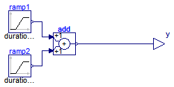

Anton Haumer
Technical Consulting & Electrical Engineering
A-3423 St.Andrae-Woerdern, Austria
email: a.haumer@haumer.at
Dr. Christian Kral
Austrian Institute of Technology, AIT
Giefinggasse 2
A-1210 Vienna, Austria
Copyright © 1998-2010, Modelica Association, Anton Haumer and Austrian Institute of Technology, AIT.
This Modelica package is free software and the use is completely at your own risk; it can be redistributed and/or modified under the terms of the Modelica License 2. For license conditions (including the disclaimer of warranty) see Modelica.UsersGuide.ModelicaLicense2 or visit http://www.modelica.org/licenses/ModelicaLicense2.
Extends from Modelica.Icons.Package (Icon for standard packages).
| Name | Description |
|---|---|
| DoubleRamp | Ramp going up and down |

Extends from Modelica.Blocks.Interfaces.SO (Single Output continuous control block).
| Type | Name | Default | Description |
|---|---|---|---|
| Real | offset | Offset of ramps | |
| Time | startTime | StartTime of 1st ramp [s] | |
| Time | interval | Interval between end of 1st and beginning of 2nd ramp [s] | |
| Ramp 1 | |||
| Real | height_1 | Height of ramp | |
| Time | duration_1 | Duration of ramp [s] | |
| Ramp 2 | |||
| Real | height_2 | Height of ramp | |
| Time | duration_2 | Duration of ramp [s] | |
| Type | Name | Description |
|---|---|---|
| output RealOutput | y | Connector of Real output signal |
model DoubleRamp "Ramp going up and down"
extends Modelica.Blocks.Interfaces.SO;
parameter Real offset(start=1) "Offset of ramps";
parameter Modelica.SIunits.Time startTime(start=0.2) "StartTime of 1st ramp";
parameter Modelica.SIunits.Time interval(start=0.2)
"Interval between end of 1st and beginning of 2nd ramp";
parameter Real height_1(start=-1) "Height of ramp";
parameter Modelica.SIunits.Time duration_1(min=Modelica.Constants.small, start=0.2)
"Duration of ramp";
parameter Real height_2(start=1) "Height of ramp";
parameter Modelica.SIunits.Time duration_2(min=Modelica.Constants.small, start=0.2)
"Duration of ramp";
Modelica.Blocks.Math.Add add;
Modelica.Blocks.Sources.Ramp ramp1(
final height=height_1,
final duration=duration_1,
final startTime=startTime,
final offset=offset);
Modelica.Blocks.Sources.Ramp ramp2(
final height=height_2,
final duration=duration_2,
final startTime=startTime + duration_1 + interval,
final offset=0);
equation
connect(ramp1.y, add.u1);
connect(ramp2.y, add.u2);
connect(add.y, y);
end DoubleRamp;